Market Trends
1.2020年全球内存市场供需现状与发展趋势解读（附PPT）(全球半导体观察 2020-05-11)
受到疫情蔓延影响，全球经济下行及消费力度下滑，终端产品需求将直接面临冲击，上游产业链各环节亦将无可避免地受到不同程度的影响。在此环境下，2020年全球存储产业的供需状况将发生哪些变化？
5月8日，集邦咨询举行第六场线上直播，集邦咨询研究副总郭祚荣带来《疫情冲击，2020年全球存储产业供需反转？》主题分享，在线解读内存市场供需现状与发展趋势。
郭祚荣表示，受到疫情影响，整个存储产业供需状况发生了非常大的变化，内存价格走势也将随之有所改变。
从供给端看，全球2020年内存市场年成长预估为13.2%，这个数字跟往年相比无疑较为保守，主要原因是三大原厂今年以获利为目标、资本支出趋缓，投片量跟去年相比成长并不多，工艺与制程转进速度亦慢下来。
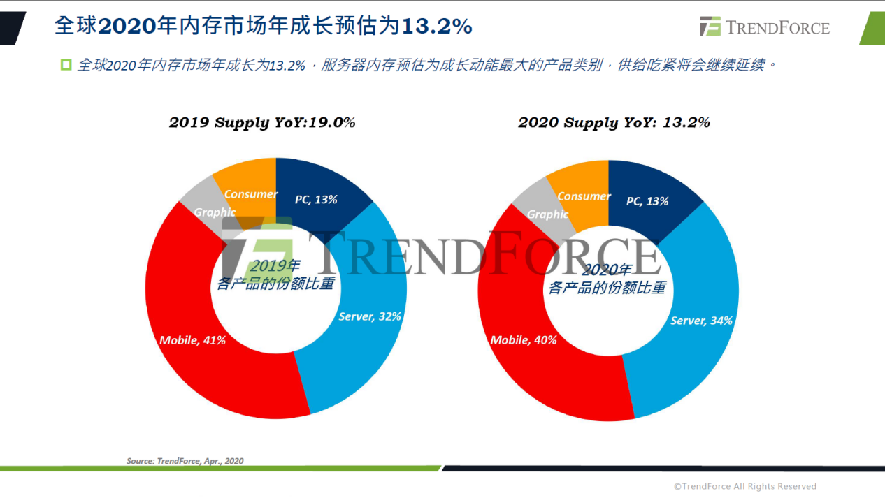
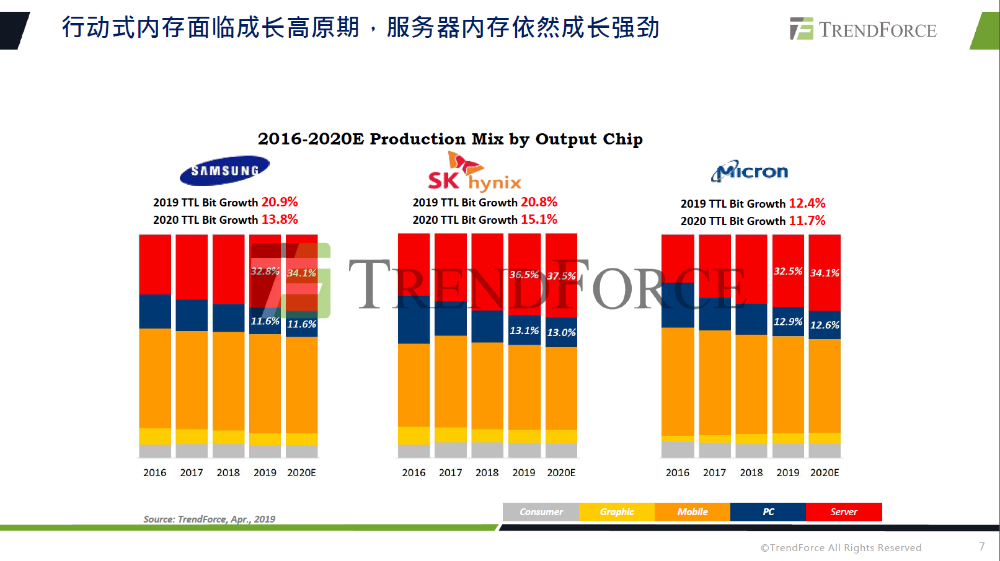…………
2.DRAM进入涨价周期，惟疫情影响出货导致第一季产值衰退4.6% )(集邦咨询 2020-05-13)
根据集邦咨询半导体研究中心(DRAMeXchange)最新调查，第一季DRAM供应商库存去化得宜，季末的库存水位与年初相比已经显著下降，因此降价求售压力不再，整体DRAM（内存）均价相较前一季上涨约0-5%。然而，因应新冠肺炎疫情，各国祭出封城锁国政策，导致物流受阻，DRAM的位元出货也受到影响。所以虽然均价小幅上涨，但第一季DRAM整体产值季衰退4.6%，达148亿美元。
集邦咨询指出，第一季受阻的出货将递延至第二季，因此在DRAM均价上涨幅度扩大且出货量同时提升的情况下，集邦咨询预测第二季DRAM整体产值将季增超过两成，原厂的营收与获利能力将持续成长。
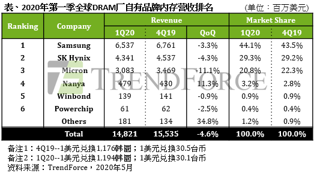
2.As DRAM Market Enters Period of Price Hikes, Revenue Drops by 4.6% QoQ in 1Q20 Due to COVID-19’s Impact on Shipment （TrendForce 2020-05-13)
According to the latest investigations by the DRAMeXchange research division of TrendForce, DRAM suppliers were able to successfully reduce their inventories in 1Q20, with significantly lower inventory levels at the end of 1Q20 compared to the beginning of the year. Hence, suppliers are no longer under imminent pressure to slash prices, and overall DRAM ASP rose by about 0-5% QoQ. However, while governments responded to the COVID-19 pandemic by implementing citywide and nationwide lockdown policies, the resultant logistic disruptions in turn affected DRAM bit shipment as well. Therefore, in spite of the minor rise in ASP, global DRAM revenue decreased by 4.6% QoQ, reaching US$14.8 billion.
TrendForce indicates that the backlog of orders in 1Q20 will be deferred to 2Q20. In 2Q20, as the magnitude of QoQ increase in DRAM ASP expands, and bit shipment rebounds, TrendForce forecasts a QoQ increase of more than 20% in overall DRAM revenue. DRAM suppliers are projected to continue improving their revenue and profitability.
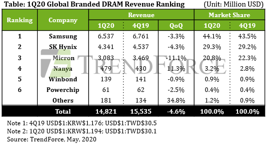
3.美扩大对华为禁令，存储器产业短期尚不致受到实质冲击(集邦咨询 2020-05-18)
根据集邦咨询半导体研究中心(DRAMeXchange)调查显示，美国商务部工业和安全局(BIS)于5月15日公布针对华为出口管制的新规范，未来使用美国半导体相关设备的外国芯片制造商必须要特别申请核准，才可对华为、海思以及其他相关公司出货。虽然相关法条仍存有进一步解释的空间，但目前观察对于存储器的采购（含DRAM与NAND Flash）影响有限，各原厂仍可继续对华为出货。但值得注意的是，美国对于华为或其他中国品牌的规范力道会持续增强，因此对于后续存储器的供给或需求面的冲击还需要持续观察评估。
以存储器的需求面来说，主要观察重点在于禁令是否会冲击华为的终端出货表现（涵盖智能手机、笔记本电脑、服务器相关以及网通产品）。集邦咨询认为，对于目前关键零部件库存量相对足够的智能手机、笔电与服务器等产品而言，短期内的出货冲击较低；主要影响可能是在5G基站、网通类别产品的后续出货动能。然而，考虑禁令仍有120天的缓冲期，加上华为先前为避免受禁制令影响，已预先拉高零部件库存，因此集邦咨询认为，禁令对华为终端出货造成具体冲击的时间点最快会落在2020年第四季以后。
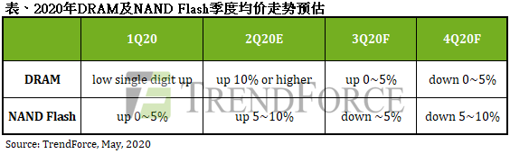
3.Expanded U.S. Rules Sanctioning Huawei to Have No Substantial Impact on Memory Industry in Short-Term (TrendForce, 2020-05-18)
According to the latest investigations by the DRAMeXchange research division of TrendForce, the Bureau of Industry and Security of the U.S. Department of Commerce announced an expansion of the trade restrictions against the Chinese technology giant Huawei on May 15. The new rules, once implemented, will compel all foreign semiconductor manufacturers that use U.S.-made equipment to obtain a special license from the U.S. government in order to supply chips to Huawei and its subsidiaries or affiliates such as HiSilicon. While these rules are subject to further interpretation, TrendForce’s investigation finds that their effect on Huawei’s procurement of memory components (both DRAM and NAND Flash) is limited for now, with both DRAM and NAND Flash suppliers able to continue their shipments to Huawei. Worth noting, however, is the fact that the U.S. government will keep tightening its oversight on Huawei and Chinese technology enterprises on the whole. Therefore, further observations are needed to determine how much of an impact the enforcement of future restrictions will have on the ability of memory suppliers to sell their products and on the overall demand of the memory market going forward.
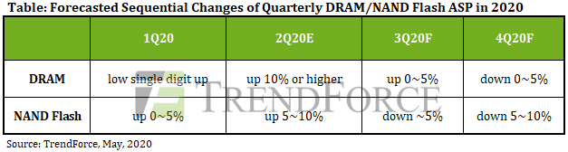
4.新显卡与游戏机双重引擎，Graphics DRAM需求持续增温(集邦咨询 2020-05-19)
根据集邦咨询半导体研究中心(DRAMeXchange)最新调查，今年两大显卡厂英伟达（NVIDIA）与超威（AMD）预计将于第三季发布全新GPU，加上微软（Microsoft）与索尼（Sony）规划于第四季发布新款游戏机，全数搭载高容量GDDR6存储器，这波需求将帮助绘图用存储器(Graphics DRAM)成为所有DRAM（内存）类别中，价格相对有支撑的产品。
集邦咨询表示，受到疫情影响，预估第三季整体DRAM价格上涨幅度相比第二季将大幅收敛，部分产品价格更可能于第四季反转向下，但Graphics DRAM价格仍有机会在下半年力守持平到小幅上涨。
两大显卡厂将于第三季发表高效能7nm GPU，全数采用最新GDDR6……
两大游戏机品牌将于第四季发表搭载GDDR6 16GB新机，容量较前一代翻倍……
2020年GDDR6供应商仅三星与美光，SK海力士预计年底加入竞局……
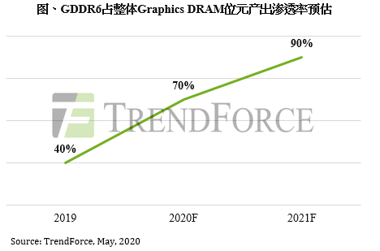
4.Release of New Video Cards and Gaming Consoles to Elevate Graphics DRAM Demand(TrendForce, 2020-05-19)
According to the latest investigations from the DRAMeXchange research division of TrendForce, both NVIDIA and AMD are planning to release new GPUs in 3Q20, and both Microsoft and Sony are expected to release new gaming consoles in 4Q20. Since all of these products will be equipped with high-density GDDR6 memory, their releases are expected to create a wave of demand for Graphics DRAM, in turn propping up its prices relative to other DRAM applications.
Owing to the impact of the COVID-19 pandemic, TrendForce expects the increase in DRAM prices in 3Q20 to be drastically diminished compared to 2Q20 increases; the prices of some memory products may even take a downturn in 4Q20. But Graphics DRAM prices are likely to remain constant or undergo a small increase in 2H20.
NVIDIA and AMD will announce high-performance 7nm GPUs equipped with the latest GDDR6 memory in 3Q20……
In 4Q20, Sony and Microsoft will announce new gaming consoles equipped with 16 GB GDDR6 memory, doubling that of the previous generation……
Samsung and Micron are currently the sole suppliers of GDDR6 memory, while SK Hynix is expected to join the competition in late 2020……
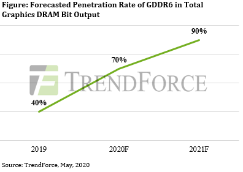
5.China to Fall Far Short of its “Made-in-China 2025” Goal for IC Devices(IC Insights, 2020-05-21)
IC production in China represented 15.7% of its $125 billion IC market in 2019, up only slightly from 15.1% five years earlier in 2014. As shown in Figure 1, IC Insights forecasts that this share will increase by 5.0 percentage points to 20.7% in 2024 (one percentage point per year on average).
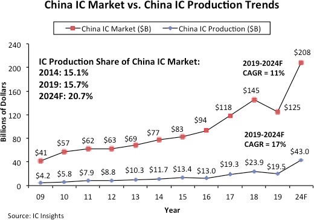
A very clear distinction should be made between China’s IC market and indigenous IC production in China. As IC Insights has oftentimes stated, although China has been the largest consuming market for ICs since 2005, it does not necessarily mean that large increases in IC production within China would immediately follow, or ever follow.
Of the $19.5 billion worth of ICs manufactured in China last year, China-headquartered companies produced only $7.6 billion (38.7%), accounting for only 6.1% of the country’s $124.6 billion IC market. TSMC, SK Hynix, Samsung, Intel, and other foreign companies that have IC wafer fabs located in China produced the rest. IC Insights estimates that of the $7.6 billion in ICs manufactured by China-based companies, about $1.8 billion was from IDMs and $5.8 billion was from foundries like SMIC.
……
Vendor News
1.Samsung improves DRAM market share amid COVID-19 pandemic(Samsung, 2020-05-15）
According to TrendForce data cited by Yonhap News, Samsung’s DRAM revenues declined in Q1 2020 in no small part due to the COVID-19 pandemic. But despite these hurdles, Samsung managed to remain dominant in the global DRAM market throughout the January-March period and even boosted its market share.
Samsung’s global DRAM market share stood at 43.5% last quarter after a 1.6% drop from Q3 2019. But although the COVID-19 pandemic left a mark on the global economy, the Korean giant was able to improve its market share by 0.6% in Q1 2020. Its DRAM solutions covered 44.1% of the market at the end of March. The company was followed by SK hynix with a 29.3% market share, and Micro Technology with a 20.8% share.
2.Micron, Samsung, And SK Hynix: The DRAM Oligopoly (Seekingalpha, 2020-05-12)
……
The rapidly growing cloud computing market is a key growth driver for DRAM. Demand will be further boosted by the increasing connectivity of the world through 5G, AI and the Internet of Things. Recent market imbalances seen last year caused an oversupply issue and slowed down the market. Since the beginning of 2020, however, we have seen a turnaround with average selling prices stabilizing in the first quarter. Developments from the COVID-19 pandemic led to global lockdowns which saw a rise in remote working and virtual learning. This factor in turn further drove up demand for DRAM in servers and PCs. Assuming minimal disruptions in the second half of the year, we see DRAM prices increasing by 10% which should translate to better financial performances for D3.
Based on the Herfindahl-Hirschman Index (‘HHI’), a common measure of market concentration, we calculated the DRAM industry concentration. An HHI reading of greater than 2,500 indicates a highly concentrated market, and the table below clearly shows that D3 is indeed an oligopoly.
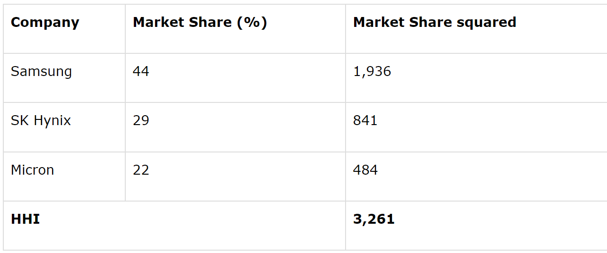
……
3. Report: Micron Increasing 1znm DDR4 DRAM Production(Tomshardware 2020-05-13)
Memory manufacturer Micron is investing heavily in growing its 1znm DDR4 DRAM production in its Taiwanese facilities, according to “sources familiar with the matter” at DigiTimes.
The 1z-nanometer process is the latest node size in the memory industry, offering higher density, increased efficiency and faster speeds. The standard covers node sizes between 12nm and 14nm, whereas the 1ynm standard is slightly larger at 14nm to 16nm.
In this 1znm production growth phase, Micron is reportedly focusing on DDR4 products, producing 16Gb DRAM modules for use in desktops and laptops. Production is taking place in Taichung.
……
4. Micron Doubles Down on Cuts to Memory Chip Production(electronicdesign 2020-06-01)
Micron Technology in March said it would reduce its DRAM and NAND production in 2019 as demand dropped off for short-term memory and long-term storage used in smartphones, data centers and personal computers, watering down the selling price of its products and eroding its profits. But the company, the No.4 player in the global chip industry, acknowledged last week that it needed to be more aggressive.
The company said it still planned to cut DRAM manufacturing by 5% to balance out the supply and demand of the short-term memory chips, which is what determines their average selling price. In March, Micron said it would also curtail NAND production by 5%. But Sanjay Mehrotra, Micron’s chief executive, said on a conference call last week it would slash NAND production by another 5%—a total of 10% in 2019.
……
5.预计2021年量产 传SK海力士将在1anm DRAM中引入EUV技术(TechNews科技新报 2020-06-01)
就在當前因為市場不確定因素增加，以及武漢肺炎疫情恐將影響記憶體後續市場發展的情況下，主要記憶體廠商皆不輕易擴增產能，反而以優化製程技術的方式來增加其供應的能力。因此，根據南韓媒體報導，記憶體大廠 SK 海力士 (SK Hynix) 的相關內部人士透露，該公司已開始研發第 4 代 10 奈米級製程 (1a) 的 DRAM，內部代號為「南極星」 (Canopus)，而且預計將在製程中導入 EUV 曝光技術。
報導指出，目前 SK 海力士最先進的 DRAM 產品主要以 10 奈米等級的 1Y 及 1Z 製程技術為主，這是屬於第 2 代及第 3 代的 10 奈米等級製程。該公司計劃在 2020 年下半年將這兩種製程技術的生產比重提高到 40%。此外，SK 海力士還將繼續發展新一代的 DRAM 的製程技術。
報導進一步強調，「南極星」(Canopus) 將是 SK 海力士至今的最關鍵發展計畫之一，因為這是該公司首度應用 EUV 曝光技術來生產 DRAM。不過，報導也引用南韓一位消息人士的說法指出，目前 SK 海力士當下最重要的問題，是公司是能否透過使用 EUV 曝光技術來確保其產品的有效競爭力。
6.兆易创新Q1营收同比增长76.51% 将研发1Xnm以下DRAM (全球半导体观察 2020-05-06)
近日，兆易创新发布最新财报，数据显示，2020年第一季度，兆易创新共实现营收8.05亿元，同比增长76.51%；归属于上市公司股东的净利润1.68亿元，同比增长高达323.24%。兆易创新表示，2020年第一季度财报同比大涨，主要受消费类、物联网市场同期需求增加，而2019年第一季度受中美贸易摩擦影响市场需求疲软。
…………
2019年9月，兆易创新发布非公开发行股票预案，拟募集资金总额不超过人民币43亿元，用于DRAM芯片自主研发及产业化项目及补充流动资金。项目开发目标为研发1Xnm级（19nm、17nm）工艺制程下的DRAM技术，设计和开发DDR3、LPDDR3、DDR4、LPDDR4系列DRAM芯片。
兆易创新表示，2020年将继续推进公司非公开发行股票事项，拟募集资金不超过约43亿元，用以研发1Xnm级工艺制程下的DRAM技术，进一步扩大公司存储器产品的种类与规模。此外，公司将继续推进合肥12英寸晶圆存储器研发项目合作，探讨在DRAM产品销售、代工、以及工程端的多种合作模式。
7.打造10纳米级制程试产线 南亚科增加约16亿元资本支出 (TechNews科技新报 2020-05-07)
根据存储器大厂南亚科的最新重大讯息公告指出，南亚科董事会于6日决议，将追加新台币65.6亿元（约合人民币15.5亿元）的资本支出预算，用以打造10纳米级制程产线。
此前南亚科董事会决议，在年度资本支出的部分，南亚科2020年度资本支出预算以不超过新台币92亿元为上限，其中包含10纳米级制程研发、试产及20纳米递延等资本支出等。如今再加入新的资本支出预算，预计2020年度的资本支出预算交以不超过157.6亿元为上限。
事实上，南亚科总经理李培瑛在上一季法说会上就已经宣布，南亚科已完成自主研发10纳米级DRAM生产技术，并且将在2020年下半年试产。而南亚科新成功开发出的10纳米级DRAM生产技术，预计将使DRAM产品可持续微缩至少3个世代。而第一代的10纳米级产品包括8GB DDR4、LPDDR4及DDR5将建构在自主制程技术及产品技术平台上，并预计2020下半年进入产品试产阶段。
至于第二代10纳米级制程技术，已开始进入研发阶段，预计2022年前导入试产，之后将会再开发第三代的10纳米制程技术。李培瑛强调，南亚科进入10纳米级制程之后，会以自行研发的技术为主，降低授权费用支出，以大幅提升效能。
New Technology
1.六大国产CPU | 全面梳理分析(信创工程咨询 2020-06-02）
CPU作为ICT设备的运算和控制核心，负责指令读取、译码与执行，因研发门槛高、生态构建难，被认为是集成电路产业中的“珠穆朗玛峰”。纵观全球，Intel、AMD两大巨头领跑通用CPU（桌面与服务器CPU）市场；国内，国产CPU正处于奋力追赶的关键时期，以飞腾、鲲鹏、海光、龙芯、兆芯、申威等为代表的厂商正全力打造“中国芯”。本文将重点围绕国产CPU的发展历程与当前产业链各领军企业的布局情况作详尽解读，具体如下：
1、 国产CPU发展历程回溯
2、 飞腾：PK生态的主导者
3、 鲲鹏：快速崛起的领导者
4、 海光：性能领先的实干者
5、 龙芯：完全自主的引领者
6、 兆芯：合资CPU的探路者
7、 申威：为超算而生的强者
……
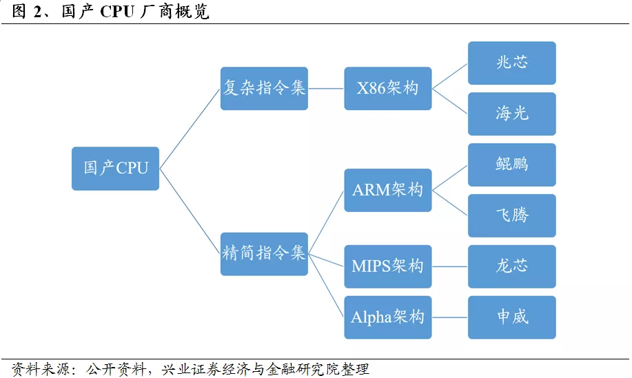
……